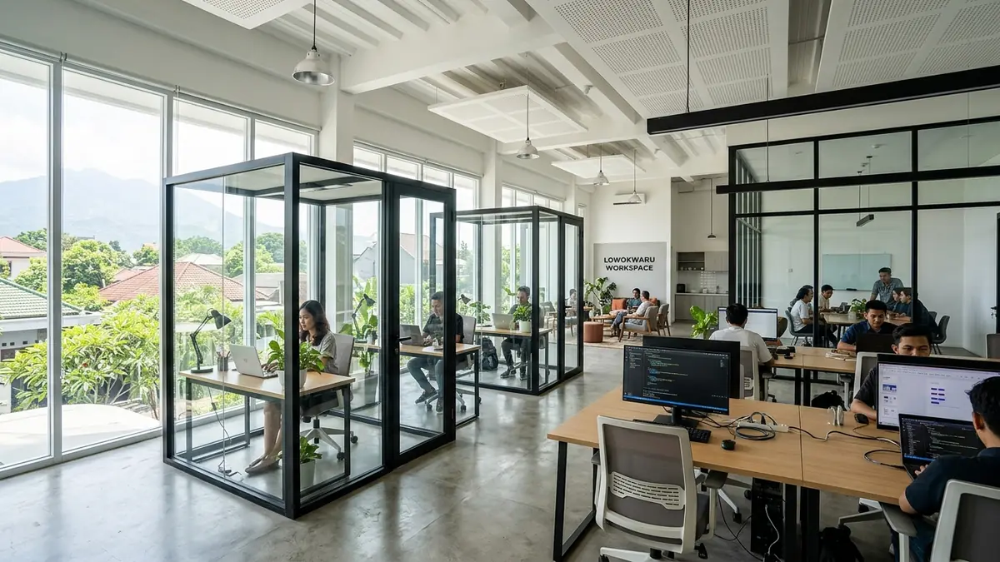

Studi Kasus: Pemasangan Partisi Kaca Tempered Kantor Minimalis Sejuk di Lowokwaru

📌 Ringkasan Inti
Partisi kaca tempered menjadi solusi umum untuk kantor minimalis di Lowokwaru karena memberi kesan terbuka namun tetap membatasi ruang secara fungsional. Studi kasus ini membahas proses pemasangan sekat kaca pada ruang meeting bergaya minimalis.
- Partisi kaca tempered umumnya menggunakan ketebalan sekitar 12mm untuk kebutuhan kantor.
- Bingkai aluminium berfungsi menopang kaca sekaligus menjaga tampilan tetap rapi.
- Sealant silikon pada sambungan berperan penting mencegah kebocoran udara maupun air.
- Ruang meeting menjadi area yang umum menggunakan partisi kaca untuk privasi visual dan akustik dasar.
- Lowokwaru yang banyak dihuni startup dan kantor kecil membuat kebutuhan desain kantor modern terus meningkat.
- Apa Itu Partisi Kaca Tempered untuk Kantor
- Studi Kasus Pemasangan di Ruang Meeting Lowokwaru
- Spesifikasi Umum Kaca dan Bingkai yang Digunakan
- Garansi Partisi Kaca Tempered Terhadap Kebocoran
- Manfaat Partisi Kaca Tempered untuk Kantor Minimalis
- Kesalahan Umum Saat Memasang Partisi Kaca Kantor
- Kesimpulan Praktis Pemasangan Partisi Lowokwaru
Kebutuhan sekat kaca kantor lowokwaru semakin meningkat seiring berkembangnya ekosistem startup, kantor agensi kreatif, dan ruang komersial modern di kawasan pendidikan ini. Pilihan partisi kaca tempered kantor Lowokwaru menjadi solusi ideal yang menghadirkan suasana lapang sekaligus menjaga batas fungsional tiap ruangan.
Partisi kaca tempered menjadi solusi umum untuk kantor minimalis di Lowokwaru karena memberi kesan terbuka namun tetap membatasi ruang secara fungsional. Studi kasus ini membahas proses pemasangan sekat kaca pada ruang meeting bergaya minimalis dengan detail material dan prosedur teknis di lapangan.
Apa Itu Partisi Kaca Tempered untuk Kantor
Partisi kaca tempered adalah sekat ruangan berbahan kaca yang telah melalui proses penguatan panas (thermal tempering) sehingga lebih tahan benturan dibanding kaca biasa. Partisi ini umum dipakai di kantor untuk memisahkan ruang kerja tanpa menghalangi pencahayaan alami.
Di Lowokwaru, partisi kaca tempered banyak dipilih untuk kantor bergaya minimalis karena memberi kesan luas meski ruangan terbagi menjadi beberapa bagian. Bingkai aluminium biasanya digunakan sebagai penopang kaca agar posisi partisi tetap stabil dan kokoh.

Studi Kasus Pemasangan di Ruang Meeting Lowokwaru
Studi kasus ini membahas pemasangan partisi kaca tempered pada ruang meeting kantor minimalis di kawasan Jalan Soekarno Hatta, Lowokwaru. Ruang meeting dipilih karena membutuhkan privasi visual sekaligus kesan modern yang terbuka bagi klien maupun tim kerja internal.
Proses pemasangan umumnya dimulai dari pengukuran presisi bukaan ruang, dilanjutkan dengan pemasangan bingkai aluminium sebagai rangka penopang kaca tempered. Ketebalan kaca yang umum digunakan untuk partisi kantor berada di kisaran 12mm, dipilih karena cukup kuat namun tetap ringan untuk dipasang pada rangka aluminium standar.
Setelah bingkai terpasang, kaca tempered dimasukkan dan dikunci menggunakan aksesori penjepit, kemudian sambungan antara kaca dan bingkai ditutup menggunakan sealant silikon netral berkualitas tinggi. Tahap akhir berupa pembersihan permukaan kaca agar hasil akhir terlihat rapi tanpa bekas material sisa pemasangan.
Spesifikasi Umum Kaca dan Bingkai yang Digunakan
Spesifikasi umum yang dipakai pada partisi kantor mencakup ketebalan kaca sekitar 12mm dengan merk kaca lokal yang umum tersedia di toko bahan bangunan Lowokwaru, serta bingkai aluminium dengan finishing warna netral seperti hitam anodize, putih, atau abu-abu modern. Kombinasi ini dipilih karena cocok dengan konsep kantor minimalis kekinian.
Selain ketebalan kaca, jenis sealant juga menjadi bagian penting dari spesifikasi. Sealant silikon dipilih karena elastis dan mampu menyesuaikan pergerakan kecil pada bingkai aluminium akibat perubahan suhu ruangan sepanjang hari saat pendingin udara (AC) beroperasi.
Paket Partisi Kaca Tempered Kantor Lowokwaru
Wujudkan tata ruang kantor dan ruang meeting modern minimalis di kawasan Lowokwaru, Suhat, dan sekitarnya dengan kaca tempered 12mm berspesifikasi standar pabrik dan garansi pemasangan resmi.
Garansi Partisi Kaca Tempered Terhadap Kebocoran
Garansi terhadap kebocoran pada sambungan sealant umumnya diberikan oleh penyedia jasa pemasangan profesional, dengan durasi dan cakupan yang dapat berbeda tergantung kebijakan masing-masing penyedia. Garansi ini biasanya mencakup perbaikan ulang sealant apabila terjadi kebocoran udara bertekanan atau rembesan air dalam periode tertentu setelah pemasangan.
Penting bagi pemilik kantor di Lowokwaru untuk menanyakan cakupan garansi secara tertulis sebelum pekerjaan dimulai, termasuk apakah garansi mencakup penggantian sealant saja atau juga pengecekan ulang kerapatan bingkai aluminium serta pelurusan engsel pintu kaca floor hinge.
"Dalam pemasangan partisi kaca tempered kantor, kunci utama ketahanan dan kedap suara terletak pada presisi bukaan rangka aluminium serta kualitas aplikasi silikon sealant netral. Ketelitian sealant inilah yang melindungi ruang meeting dari getaran dan rembesan pendingin udara secara konsisten."
Manfaat Partisi Kaca Tempered untuk Kantor Minimalis
Manfaat utama partisi kaca tempered adalah menjaga pencahayaan alami tetap masuk ke seluruh ruangan meski dibagi menjadi beberapa area kerja. Hal ini membantu menciptakan suasana kantor yang terasa lebih luas, segar, dan modern, sangat cocok untuk kantor skala kecil hingga menengah di kawasan Lowokwaru.
Selain itu, partisi kaca tempered relatif mudah dibersihkan dibanding sekat berbahan gypsum atau partisi kayu lapis, serta memberikan kesan arsitektur profesional dan bonafide yang selalu dicari oleh pemilik kantor bergaya minimalis kontemporer.
Kesalahan Umum Saat Memasang Partisi Kaca Kantor
Kesalahan umum yang sering terjadi adalah pengukuran bukaan yang kurang presisi sehingga bingkai aluminium tidak pas dengan ukuran lembaran kaca tempered yang telah diproduksi khusus di pabrik. Karena sifat kaca tempered tidak bisa dipotong ulang setelah proses tempering, kesalahan ukur beberapa milimeter saja bisa berakibat fatal.
Kesalahan lain adalah pemakaian sealant asam berkualitas rendah yang mudah menguning dan retak setelah beberapa bulan pemakaian. Selain itu, kurangnya perhatian pada jalur sirkulasi pendingin ruangan di sekitar partisi dapat menyebabkan salah satu area kantor terasa pengap.
Kesimpulan Praktis Pemasangan Partisi Lowokwaru
Partisi kaca tempered menjadi pilihan tepat untuk kantor minimalis di Lowokwaru karena menjaga pencahayaan alami sekaligus memberi privasi fungsional yang elegan. Pastikan spesifikasi kaca 12mm, kualitas sealant netral, dan cakupan garansi kebocoran dikonfirmasi secara jelas dan tertulis sebelum pemasangan dilakukan bersama aplikator terpercaya di Malang.
Pertanyaan Seputar Partisi Kaca Kantor Lowokwaru
Ketebalan sekitar 12mm umum digunakan untuk partisi kantor karena cukup kuat, aman terhadap benturan, namun tetap ringan untuk dipasang pada bingkai aluminium standar.
Secara umum sangat aman karena kaca tempered dirancang lebih tahan benturan 4 hingga 5 kali lipat dibanding kaca biasa, serta tidak menghasilkan pecahan tajam yang berbahaya.
Ya, aplikator profesional seperti KUSEN ALUMINIUM Malang memberikan garansi perbaikan sealant dan pengecekan kerapatan bingkai aluminium dalam periode pemeliharaan resmi tertulis.